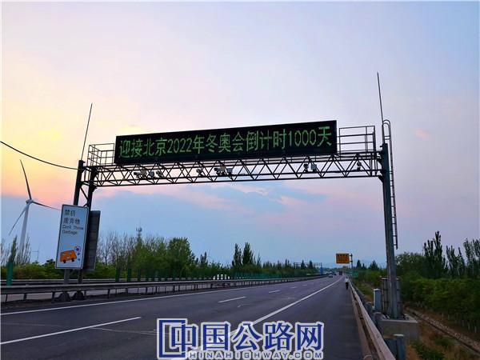

微官网
微官网
2019-05-14 河北省交通运输厅 作者：何文儒

在北京冬奥会倒计时1000天到来之际，京张公司积极行动，为迎冬奥营造良好的氛围。
5月10日，按照省厅冬奥办的统一部署，京张高速各收费站、下花园和官厅两个服务区，通过加长横幅和电子显示屏方式，向社会展示“迎接北京2022年冬奥会倒计时1000天”宣传标语，相关标语同时在全线可变情报板播出。自晚8点起，标语内容改为“庆祝北京2022年冬奥会倒计时1000天”。倒计时标语的展示和播出，很快引起了过往司乘和公司员工的注意力，冬奥临近的意识深入人心。